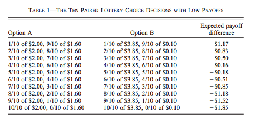

Le Risque¶
De manière générale, les gens n’aiment pas le risque. Pour s’en convaincre, imaginez vous faire offrir à la retraite:
Plan A: un revenu certain de: 50 000/an
Un revenu incertain à la retraite (dès suite de placements)
Plan B
50% chance 10 000/an
50% chance 90 000/an
Revenu espéré est de 50 000 dans les deux cas, lequel choisissez-vous?
Rendement et risque¶
Imaginez que le placement est maintenant:
Plan C
50% chance 10 000/an
50% chance 100 000/an
ou encore mieux,
Plan D
50% chance 10 000/an
50% chance 150 000/an
À un moment, vous allez probablement choisir le placement risqué parce que le rendement espéré est plus élevé. Les préférences en situation de risque sont fonctions des gains mais aussi du risque (les probabilités et les gains). La théorie du consommateur que nous avons vu ne couvre pas ce cas.
L’approche d’espérance d’utilité (EU)¶
Lotterie
Lotterie \(\mathcal L = (p,X \;; 1-p,Y)\) : avec probabilité \(p\) d’obtenir \(X\), et probabilité \(1-p\) d’obtenir \(Y\). L’espérance de la lotterie est \(\mathbb{E}_{L} = pX + (1-p)Y\).
Espérance d’utilité semble naturelle
\[\mathbb{E}_{{ \mathcal L}} (u) = p\times u(X) + (1-p) \times u(Y)\]
Préférences sur des lotteries
Le consommateur préfère la lotterie \(\mathcal L_1\) à la lotterie \(\mathcal L_2\) si
\[\mathbb{E}_{{ \mathcal L_1}} (u) > \mathbb{E}_{{ \mathcal L_2}} (u)\]La représentation des préférences par l’espérance d’utilité est appelé utilité von Neumann et Morgenstern (vNM).
Exemple
Si \(u(X) = \sqrt{X}\) et le consommateur fait face aux lotteries \(\mathcal L_1 = (0.5,0\;; 0.5,16)\) et \(\mathcal L_2 = (1,6)\).
Exercice A: Quel est le rendement espéré de chaque lotterie?
Exercice B Si le consommateur a des préférences vNM, laquelle des lotteries choisira-t-il?
Exercice C: Est-ce que la fonction d’utilité \(u(X) = X\) donne le même choix?
En situation de certitude, l’utilité est ordinale: seul l’ordre compte. Cependant, en situation de risque, l’utilité espérée à la vNM est cardinale, car elle dépend des probabilités qui sont ont une échelle (entre 0 et 1). Donc, les transformations monotones ne sont pas permises. Mais une transformation est permise: la transformation affine: \(\widehat u = a u +b\) avec \(a>0\). On peut montrer que cette transformation n’affecte pas les préférences
\[\begin{split}\begin{aligned} \mathbb{E}_{L_1} \widehat u \geq \mathbb{E}_{L_2} \widehat u & \iff a\mathbb{E}_{L_1} u + b \geq a\mathbb{E}_{L_2} u + b \\ & \iff \mathbb{E}_{L_1} u \geq \mathbb{E}_{L_2} u\end{aligned}\end{split}\]
Aversion au risque¶
L’attitude au risque varie d’un individu à l’autre:
Riscophobie (aversion au risque): si \(L = (p, X\;; 1-p,Y)\) et on dénote \(Z = p X + (1-p)Y\), alors le consommateur est riscophobe si s’il préfère \(\mathcal L' = (1,Z)\) à \(\mathcal L\).
Riscophilie (propension au risque): Il ou elle préfère \(\mathcal L = (p, X\;; 1-p,Y)\) à \(\mathcal L' = (1,Z)\)
Risconeutre: Alors le consommateur est indifférent entre \(\mathcal L = (p, X\;; 1-p,Y)\) et \(\mathcal L' =(1,Z)\).
Qu’observe-t-on?
Beaucoup de riscophobie
Un peu de riscophilie, mais ne tient souvent pas compte de la valeur de l’expérience de prendre des risques… Exemple du casino souvent donné…
Aversion au risque et concavité de l’utilité¶
Riscophobie
Le consommateur a une fonction d’utilité \(u\). En contexte, vNM, c’est le seul objet qu’on peut modéliser pour capter les comportements de riscophobie et de riscophilie. On peut donc se douter que les propriétés de \(u\) auront quelque chose à voir avec ces comportements.
Fixons deux états \((X,Y)\) et la probabilité \(p\) que \(X\) soit réalisé. Alors la richesse espérée est \(Z = pX + (1-p)Y\).
L’aversion au risque implique que
\[u(Z) > pu(X) + (1-p)u(Y).\]
Une fonction \(u\) qui respecte cette inégalité est concave (voir rappel mathématique). Dans le domaine des statistiques, on réfère à ce résultat comme étant l’inégalité de Jensen. Le cas de la riscophilie correspond à une fonction d’utilité convexe.
Neutralité au risque
Si l’individu est neutre face au risque, il y a indifférence entre
\[\mathcal L = (p, X\;; 1-p,Y) \quad et \quad \mathcal L' = (1,Z)\]
La fonction d’utilité doit donc être contrainte à être linéaire dans la richesse \(u(X) = a X + b\), avec le cas particulier \(u(X) = X\).
Mesurer l’aversion au risque¶
Comment mesurer le degré de riscophobie? Comment comparer deux individus et dire qu’un est plus riscophobe qu’un autre? Deux mesures sont bien utiles dans ce contexte, soit le coefficient d’aversion au risque absolue et le coefficient d’aversion au risque relatif.
Coefficient absolue:
\[A(X) = -\frac{u''(X)}{u'(X)}\]
Coefficient relatif:
\[R(X) = -\frac{u''(X)X}{u'(X)}\]
Pourquoi ces mesures? Puisque la riscophobie est reliée à la concavité, les deux mesures augmentent quand la deuxième dérivée augmente (elle est négative pour concave, d’où le moins). Ensuite, on normalise par l’utilité marginale \(u'(X)\), pour fixer les unités puisque \(u\) est ordinale.
La mesure absolue permet de regarder le niveau de riscophobie pour une lotterie en montant absolue. Le coefficient relatif permet de regarder le degré de riscophobie pour une lotterie en proportion de la richesse.
La distinction entre les deux est utile. Par exemple, on pourrait croire intuitif que la mesure absolue décroit dans la richesse (la lotterie est faible par rapport à la richesse) tandis que le coefficient relatif devrait être relativement constant puisque la lotterie reste constante en proportion de la richesse. Donc, pour une décision d’investissement de portefeuille, où la taille du portefeuille est à peu près constante en proportion de la richesse, le coefficient relatif parait la bonne mesure. Pour un risque plus absolue, par exemple, une lotterie au casino, le coefficient absolue paraît plus utile.
Comment mesurer ce coefficient? Une méthode très utilisée est le liste de prix multiples. Holt et Laury (2002) ont fait une application à la mesure des attitudes façes au risque, qui démontre entre autre l’importance de donner des incitatifs financiers à ceux qui participent.
Une liste de prix multiple présente deux lotteries sous différentes configurations. Le répondant doit choisir la lotterie qu’il préfère. Une lotterie sera choisie au hasard à la fin de l’expérience et sera jouée. Le répondant se verra payer le montant. Voici exemple tiré de Holt et Laury:
{kind=link}
On utilisera une fonction d’utilité de type,
Dans ce cas, on peut montrer que \(R(X) = r\), d’où son nom, fonction d’utilité CRRA (constant relative risk aversion).
Exercice D: En utilisant la fonction d’utilité CRRA, dans l’expérience MPL ici-haut, calculer l’interval dans lequel doit se trouver \(r\) si l’individu l’option A jusqu’au 7e choix et ensuite l’option B à partir du 8e choix?
Prime de risque¶
Considérons la lotterie \(\mathcal L =(p,X\;;1-p,Y)\). On dénote \(Z\) l’espèrance de la lotterie \(Z = pX+ (1-p)Y\). On pourrait s’intéresser à \(Z'\) tel que
\(Z'\) est un équivalent certain pour \(\mathcal L\) étant donné les préférences représentées par \(u\).
Si l’agent est riscophobe, \(Z' < Z\) et on dénote \(\pi = Z-Z'\) la prime de risque. Son interprétation dépend du contexte. Quand l’action concerne la prise de risque (par défaut l’individu est en situation de certitude), on l’interprète comme étant la compensation minimum demandée par l’agent pour prendre le risque. La prime de risque représente alors le montant minimal qu’il faut payer avec certitude à l’agent pour qu’il prenne le risque. En contexte d’investissement boursier, le rendement excédentaire requis par un investisseur riscophobe sera égal à cette prime de risque. Plus l’actif est risqué, plus il demandera une compensation (rendement) élevée.
En assurance, la prime de risque sera plutôt le montant maximal que l’agent est prêt à payer pour éliminer le risque puisque la situation sans action, est risquée, alors qu’une assurance complète élimine le risque. Il s’agit donc d’une disposition à payer pour éliminer un risque.
Exercice E: Un agent a les préférences représentées par \(u(X)=\log X\). Sa richesse initialile est \(X_0 = 100\) et il fait façe à un risque de perdre 50 avec probabilité 0.5 et gagner 50 avec une probabilité 0.5. Quel est le montant maximal qu’il est prêt à payer pour éliminer ce risque?
Une approximation à la prime de risque existe pour un risque faible. Dénotant \(\sigma^2\) la variance d’un risque absolue avec moyenne zéro, la prime de risque pour un agent ayant une richesse initiale de \(X\) est bien approximée par:
On remarque que la prime augmente avec l’aversion au risque et la variance du risque. Une variante pour les risques relatifs prend une forme similaire.
Exercice F: Avec \(u(X) = \sqrt X\), la prime de risque est-elle plus faible que dans l’exercice précédent?
Assurance¶
L’assurance est un marché qui existe parce que la population est riscophobe de manière générale. Il y a un marché pour l’assurance de biens (voitures, maisons, etc) mais aussi l’assurance des personnes (vie, rentes viagères, santé). Même nos gouvernements mettent en place des assurances, comme l’assurance-emploi (anciennement assurance-chômage).
Prennons le cas du chômage. Considérons un exemple simple où deux individus peuvent être dans les états suivants:
Employé avec probabilité 0.5, revenu de 100
Au chômage avec probabilité 0.5, revenu de 0
Dénotons les revenus réalisées des deux individus, \(I_i\) (\(i=1,2\)). Un programme d’assurance-emploi dicte plutôt que les deux individus reçoivent \((I_1+I_2)/2\) peu importe leur statut d’emploi.
L’assurance est bénéfique ex ante pour deux agents riscophobes (avant la réalisation du risque):
Sans assurance: utilité espérée de chacun des agents est \(.5 [u(0) + u(100)]\)
Avec insurance, 25 % les deux ont 0, 50% que 1 seul travaille, 25% les deux travaillent. Donc l’espérance d’utilité de chacun des agents est \(.25[u(0) + 2u(50) + u(100)]\)
L’assurance est bénéfique si
\[.25[u(0) + 2u(50) + u(100)] > .5 [u(0) + u(100)]\]
ou si \(u(50) > .5[u(0)+u(100)]\). Donc, vrai si \(u\) concave ou agent riscophobe (encore l’inégalité de Jensen).
En pratique, l’assurance-emploi pourrait être informelle entre les gens. Mais le problème est qu’après la réalisation du risque, l’individu qui a toujours un emploi ne veut plus partager. Une façon de voir un régime d’assurance, ou bien un assureur, est qu’il permet de sauver sur ces coûts de transaction (agence) entre les assurés.
L’autre avantage est que l’assureur pourra mutualiser davantage d’agents au sein du régime.
La loi des grands nombre
Considérons une variable aléatoire \(Z\) égale à \(X\) avec probabilité \(p\) et \(Y\) avec probabilité \(1-p\)
Si \(Z_1, \cdots , Z_n\) sont indépendantes avec la même distribution \((p,X \;; 1-p,Y)\) alors
\[si\; N \to +\infty,\quad \frac{1}{N} (Z_1 + Z_2 + \cdots + Z_n) \to pX + (1-p)Y\]La réalisation moyenne, qui demeure aléatoire avec \(N\) petit, devient certaine quand N tend vers l’infini.
Mutualisation
Quand un grand nombre partage le risque, il élimine le risque par l’effet de mutualisation. Les assurées reçoivent exactement le revenu moyen.
Si les agents sont riscophobes, ce résultat est désirable.
Assurance et entrepreneuriat¶
Devenir entrepreneur
Un individu a une richesse de 9 et peut décider de la garder ou bien de l’utiliser pour démarrer une entreprise. Sa richesse finale, s’il démarre une entreprise est donnée par la lotterie suivant: \(\mathcal L = (.5,0 \;; .5,25)\). Ses préférences sont vMN avec \(u(X) = \sqrt{X}\).
Exercice G: Est-ce qu’il démarre l’entreprise?
L’ange investisseur
Plutôt que d’investir seul, l’entrepreneur peut obtenir un financement d’un ange investisseur qui lui donne la moitié du capital pour la moitié du rendement.
L’entrepreneur garde donc 4.5 avec certitude s’il démarre l’entreprise. Mais il doit donner la moitié des rendements.
La lotterie est maintenant \(\mathcal L' = (.5,4.5 \;; .5,17)\)
Exercice H: Quel sera son choix?
L’émission, Les Dragons de Radio-Canada est une application directe de cet exemple. La participation est toujours conditionnelle à une part des profits. La négociation porte donc sur la part des profits en rapport à la part de l’investissement initial. En voici un exemple ou les deux entrepreneurs ont négocié fort…
En plus des différentes entreprises privées qui font ce genre d’investissements, des organisations comme Investissement Québec, les Fonds de travailleur (FTQ et Fondaction), Anges Québec, sont tous des mécanismes d’assurance qui peuvent promouvoir l’entrepreneuriat en partageant le risque.
Critique de l’espérance d’utilité¶
Paradoxe d’Allais
Paradoxe de Ellsberg
Kahneman et Tversky: L’effet des perspectives
Expérience de choix I
On tire un nombre entier entre 0 et 99 avec probabilité 1/100 pour chaque nombre entier:
Lotteries |
0 |
1-10 |
11-99 |
\(L_1\) |
50 |
50 |
50 |
\(L_2\) |
0 |
250 |
50 |
Expérience de choix II
Maintenant, on considère une autre paire avec les mêmes règles de tirages.
Lotteries |
0 |
1-10 |
11-99 |
\(L_3\) |
50 |
50 |
0 |
\(L_4\) |
0 |
250 |
0 |
Maurice Allais et son Paradoxe
Exercice I: Montrez que \(L_1 \succ L_2\) et \(L_4 \succ L_3\) sont des choix incohérents si les préférences sont représentées par l’espérance de l’utilité.
Voir cet article pour toute l’histoire derrière le Paradoxe… Munier (1991)
Expérience de choix III
Une urne contient 90 billes. 30 sont rouges. Les autres 60 sont soit noires ou blanches. La proportion de billes blanches ou noires n’est pas connue. On vous demande de faire un choix entre les deux configurations de paiements suivants (lotteries):
Lotteries |
rouge |
noire |
blanche |
\(L_1\) |
50 |
0 |
0 |
\(L_2\) |
0 |
50 |
0 |
Choice
Le même contexte pour ces deux lotteries.
Lotteries |
rouge |
noire |
blanche |
\(L_3\) |
50 |
0 |
50 |
\(L_4\) |
0 |
50 |
50 |
Le Paradoxe d’Ellsberg
Exercice J Montrez que la combinaison de choix \(L_1 \succ L_2\) et \(L_4 \succ L_3\) ne peut survenir si l’agent a des préférences représentées par l’espérance d’utilité.
Ellsberg est bien connue pour ce Paradoxe, mais encore davantage pour ses mésaventures avec le gouvernement américain… Pentagon Papers
Kahneman and Tversky: Les perspectives
Ces auteurs, tous deux récipiendaires d’un Prix Nobel, montrent que nous sommes influencés par les perspectives (framing) quand nous faisons des choix en situation risquée:
Imaginons qu’une nouveau virus pourrait tuer 600 personnes. Deux interventions sont présentées.
(Perspective positive): A) 200 sauvées, B) 1/3 probabilité que 600 sont sauvés, 2/3 que personne n’est sauvé
(Perspective négative): C) 400 vont mourrir, D) 1/3 probabilité que personne décède, 2/3 probabilité que tous décèdent.
En pratique, A est plus populaire que B, mais D est plus populaire que C. Or, en terme de personnes en vie, les deux choix mènent aux mêmes résultats.
Si les perspectives vous intéressent, allez lire ce chef d’oeuvre: Khaneman et Tversky (1979)
Exemple Python risque¶